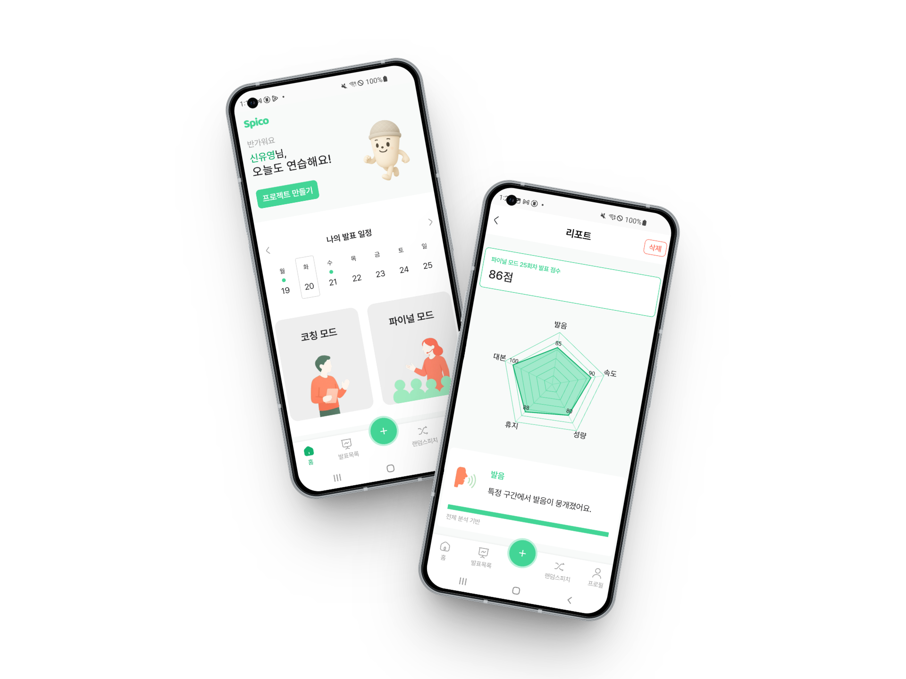

발표에
확신을 더하다

내 손안의 AI 발표 코치
학교 발표, 면접 등 다양한 상황에서 말하기는 필수가 되었지만,
혼자 연습하긴 어렵고 민망한 발표.
Spico는 누구나 혼자서도 발표 실력을 키울 수 있도록, 실시간 피드백과 청중 모드와 같은 실전 연습 환경을 제공합니다.

학교 발표, 면접 등 다양한 상황에서 말하기는 필수가 되었지만,
혼자 연습하긴 어렵고 민망한 발표.
Spico는 누구나 혼자서도 발표 실력을 키울 수 있도록, 실시간 피드백과 청중 모드와 같은 실전 연습 환경을 제공합니다.
Partial Result 기반 유사도 측정으로 현재 읽고 있는 문단을 자동 추적합니다.
성량과 발화 속도를 실시간 분석하여 시각적 경고를 제공합니다.
사용자의 목소리 파형을 즉각적으로 시각화하여 생동감을 더합니다.
연습 종료 후 AI가 발화 내용을 요약하고 예상 질문을 생성합니다.
발표 주제와 시간, 대본을 설정하고 일정을 관리합니다.

실시간 코칭 및 실전 연습 환경을 경험합니다.
연습 결과 리포트를 통해 취약점을 파악하고 보완합니다.

브랜치 생성 시 상태 자동 전환
MR 완료 시 이슈 상태 이동 자동화

팀 규칙 기반 메시지 자동 생성
작성 부담 감소 및 컨벤션 준수